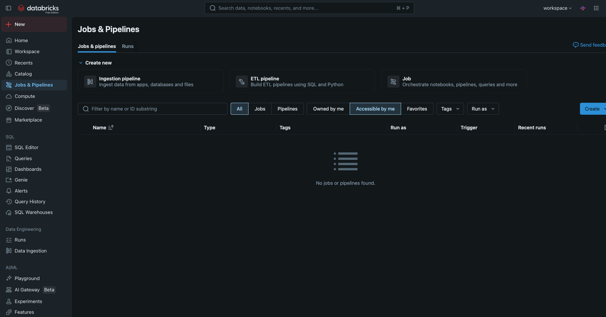
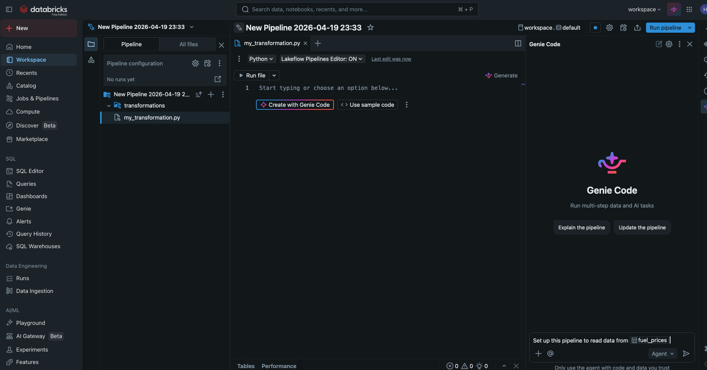
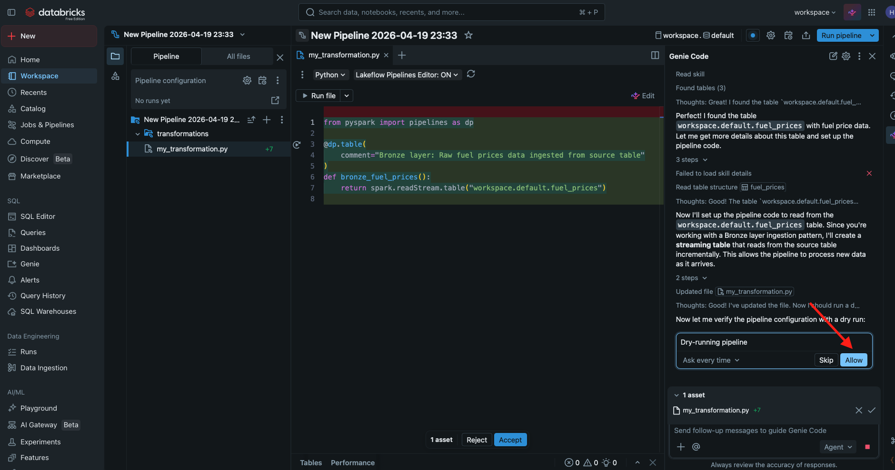

How Databricks Works for Analysts and Data Engineers
Understanding how Databricks is organized helps make sense of how each part of the platform fits together. At the foundation is the concept of a table, which is a structured set of data that lives in the Databricks lakehouse and can be queried using standard SQL. Tables are organized inside schemas, which are logical groupings similar to folders. Schemas are grouped inside a catalog, which is the top level of the hierarchy. Together, these three layers form the structure that Databricks calls Unity Catalog, a system designed to give organizations a consistent and secure way to manage all of their data in one place. When a file is uploaded and a table is created from it, that table becomes a permanent, queryable object that anyone in the workspace with the right permissions can access. For the demo on this site, a table named fuel_prices was created inside an existing schema by uploading a CSV file directly through the Databricks interface.
Dashboards in Databricks are built on top of SQL datasets. A SQL dataset is a named query, essentially a saved SELECT statement, that the dashboard can reference as a data source for its charts and counters. When you create a new dashboard, the first task is to define the datasets that will power it. Each dataset runs against the underlying table and returns a structured result that a visual can read. This separation between the query logic and the display layer is one of the things that makes Databricks dashboards practical to maintain: if the data in the table changes, the dashboard visuals automatically reflect the latest results the next time the datasets are refreshed. For the Texas Fuel Tracker dashboard shown in the demo, thirteen separate SQL datasets were created, each focused on a specific question about fuel prices, such as the most recent Houston price, the month-over-month change, or the spread between Houston and the national average. Once all thirteen datasets were saved, building the visuals was a matter of connecting each chart to the right dataset and choosing the appropriate columns for the axes and groupings.
Beyond one-off queries and dashboards, Databricks supports automated workflows through a section of the platform called Jobs & Pipelines. This is accessible directly from the left sidebar in the workspace. From there, you can create an ETL pipeline, which is a structured workflow that reads data from a source table, applies transformations, and writes the result somewhere useful. One of the more practical features here is that Databricks Genie can help configure the pipeline for you. After clicking to create an ETL pipeline, a Genie prompt appears at the bottom of the screen. You can type a plain-language instruction such as Set up this pipeline to read data from @fuel_prices, referencing the table by name, and Genie will generate the pipeline code automatically. From there, you review what it produced, click Allow and Accept to apply the generated code, and the pipeline is ready to run. You can also ask Genie to write aggregations or additional transformations before running the pipeline. Once the pipeline exists, you can trigger it manually or attach it to a job, which lets Databricks run the whole pipeline on a schedule without any manual intervention.

Image source: personal Databricks screenshot by site author.

Image source: personal Databricks screenshot by site author.

Image source: personal Databricks screenshot by site author.
The typical flow in a Databricks project follows a clear path from raw data to reporting. It starts with data landing somewhere, whether that is an uploaded file, a connected database, a cloud storage bucket, or an automated data feed. That raw data is stored in the lakehouse using Delta format, which is a storage layer that adds reliability, versioning, and performance optimizations on top of standard file formats. From there, SQL or Python code in a notebook or pipeline transforms the raw data into something clean and useful, fixing errors, standardizing formats, and joining tables together as needed. The resulting clean table becomes the source for SQL datasets, and those datasets power the dashboards that analysts and business users rely on for decision-making. Jobs and pipelines keep this chain running automatically so that the data stays current. The demo on this site covers only the upload-to-dashboard portion of this flow, but understanding the full picture helps explain why Databricks is used at scale across many industries and why the skills transfer across a wide range of real data problems.
Key Concepts at a Glance
The following list summarizes the core Databricks concepts covered on this page. Each item represents a building block that connects to the others in the platform workflow.
- Table: A structured dataset stored in the Databricks lakehouse and queryable with SQL. Tables are permanent objects that persist after the session ends.
- Schema: A logical grouping of related tables within a catalog. Similar to a folder or database namespace that keeps tables organized.
- Unity Catalog: The three-level hierarchy of catalog, schema, and table that Databricks uses to organize and govern all data in a workspace.
- SQL Dataset: A named, saved SQL query inside a dashboard that serves as the data source for one or more chart visuals.
- Dashboard: An interactive visual report built from one or more SQL datasets, containing charts, counters, tables, and other visualization types.
- Job: A scheduled task in Databricks that can run a notebook, SQL query, or pipeline automatically on a defined interval or trigger.
- Delta Live Tables: A Databricks framework for defining reliable, automated data pipelines that move data from raw sources to clean, structured tables.
- Delta Format: The storage layer that Databricks uses for tables, providing versioning, reliability, and performance improvements over standard file formats.
The Demo Walkthrough page shows several of these concepts in action using a real dataset. If you want to see how a table is created, how SQL datasets are added to a dashboard, and what the finished result looks like, that page walks through the entire process step by step with screenshots.